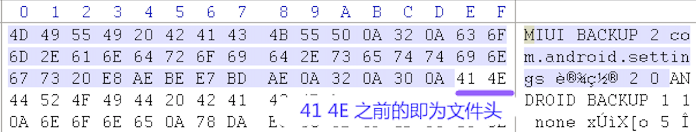

Android 无 ROOT 导出微信聊天记录¶
微信：6.7.3
MIUI：10.3.2.0
备份并导出微信数据¶
在手机上点击进入【设置 / 更多设置 / 备份和重置】，选择【本地备份 / 新建备份】，去除【系统数据】和【软件程序】的勾选，点击【软件程序】右侧的箭头进入程序列表页面，勾选微信，点击【确定】返回上级页面，然后点击【开始备份】开始备份微信数据。
MIUI 备份后的数据保存在 /MIUI/backup/Allbackup/ 中以备份时间命名的子目录里，将子目录中的备份文件（.bak 文件）复制到电脑上面。
MIUI 在 Android 的标准备份文件的前面添加了一个自定义文件头，如下图所示：
我们需要去除 41 4e 前面的自定义文件头，然后使用 Android backup extractor 和 tar 提取和解压微信备份数据，提取和解压命令如下：
$ bak_file=微信.bak
$ tail -c +$(python -c "import sys; print open('$bak_file').read(100).index('\x41\x4e')+1") $bak_file | java -jar abe-all.jar unpack - - | tar xf -
备份数据会被解压到一个 wechat 目录里。
解密聊天记录数据库文件¶
进入 wechat 目录，执行下面的命令找到聊天记录的数据库所在目录：
$ cd wechat
$ find . -name "EnMicroMsg.db"
./com.tencent.mm/r/MicroMsg/f1bde7***********7a127aae38462/EnMicroMsg.db
./com.tencent.mm/r/MicroMsg/EnMicroMsg.db
上面一串类似随机数的目录里的 EnMicroMsg.db 就是聊天记录的数据库文件，这个文件是一个使用 sqlcipher 加密过的 sqlite 数据库文件。加密的密码由手机的 IMEI 和 自己的微信 UIN 计算得到，所以首先我们需要先提取这两个的值。
将下面的代码保存到 MapDumper.java 文件中：
import java.io.FileInputStream;
import java.io.ObjectInputStream;
import java.util.Map;
public class MapDumper {
public static void main(String[] args) {
try {
FileInputStream file = new FileInputStream(args[0]);
ObjectInputStream mObjectInputStream = new ObjectInputStream(file);
Map map = (Map) mObjectInputStream.readObject();
System.out.println(map);
} catch (Exception e) {
e.printStackTrace();
}
}
}
然后执行下面的命令来提取 IMEI 和 UIN：
$ javac MapDumper.java
$ java MapDumper $(find . -name CompatibleInfo.cfg)
{98305=false, 256=A86802803750460, 94209=0, 258=XXXXXXXXXXXXXX, 259=XiaomiRedmi 5A: half thumb fastmult vfp edsp neon vfpv3 tls vfpv4 idiva idivt lpae evtstrm aes pmull sha1 sha2 crc32: AArch64 Processor rev 4 (aarch64): 8: Qualcomm Technologies, Inc MSM8917: null}
$ java MapDumper $(find . -name systemInfo.cfg)
{1=YYYYYYYYY, 2=10,163.177.81.139,80,szshort.weixin.qq.com|18,183.3.224.141,80,szshort.weixin.qq.com|6,121.51.140.139,80,szshort.weixin.qq.com|10,163.177.81.139,80,szextshort.weixin.qq.com|18,183.3.224.141,80,szextshort.weixin.qq.com|6,121.51.140.139,80,szextshort.weixin.qq.com|6,121.51.130.84,80,szshort.pay.weixin.qq.com|6,121.51.140.143,80,szshort.pay.weixin.qq.com|10,163.177.81.143,80,szshort.pay.weixin.qq.com|10,58.251.80.105,80,szshort.pay.weixin.qq.com|18,183.3.224.143,80,szshort.pay.weixin.qq.com|18,183.3.234.104,80,szshort.pay.weixin.qq.com|6,127.0.0.1,80,localhost|, 3=10,163.177.81.141,80,szlong.weixin.qq.com|10,58.251.100.119,80,szlong.weixin.qq.com|18,14.215.158.119,80,szlong.weixin.qq.com|18,183.3.224.139,80,szlong.weixin.qq.com|6,121.51.140.141,80,szlong.weixin.qq.com|6,121.51.8.119,80,szlong.weixin.qq.com|, 35=10, 37=637993789, 6=80:8080:443, 7=5:5, 46=0, 47=0, 17=0, 24=szshort.weixin.qq.com, 25=szlong.weixin.qq.com}
CompatibleInfo.cfg 文件 dump 出的内容中 258= 后是手机 IMEI 号， systemInfo.cfg 文件 dump 出的内容中 1= 后面是微信 UIN 号。
得到这两个值后将 IMEI 和 UIN 合并后计算其 md5 值，取其前 7 位即为加密数据库的密码：
$ echo -n XXXXXXXXXXXXXXYYYYYYYYY | md5 | cut -c -7
PPPPPPP
最后，进入 sqlcipher 命令行：
$ sqlcipher
sqlite>
执行下面的命令解密数据库到 MicroMsg.db 文件（其中 PPPPPPP 为上面计算得到的密码）。
.open ./com.tencent.mm/r/MicroMsg/f1bde7***********7a127aae38462/EnMicroMsg.db
PRAGMA key='PPPPPPP';
PRAGMA cipher_use_hmac=off;
PRAGMA cipher_page_size=1024;
PRAGMA kdf_iter=4000;
ATTACH DATABASE 'MicroMsg.db' AS mm KEY '';
SELECT sqlcipher_export('mm');
DETACH DATABASE mm;
.quit
导出聊天记录¶
最后我们使用 wechat-dump 中的命令从解密后的 Micromsg.db 文件中导出聊天记录到 .txt 或者 .html 文件。
参考：